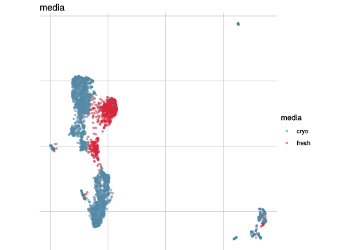
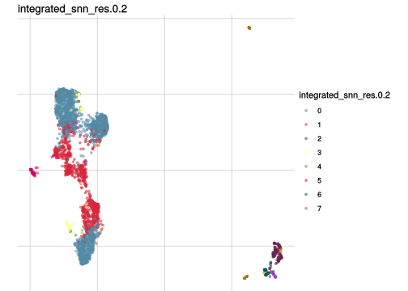
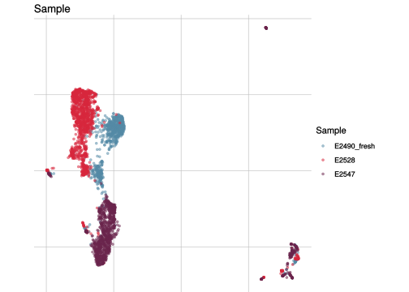
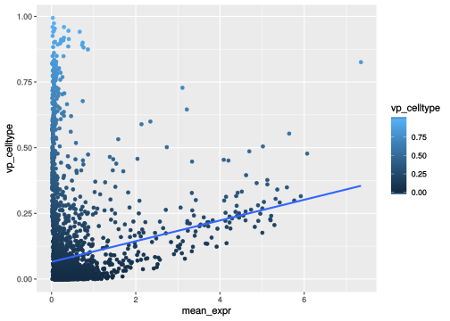
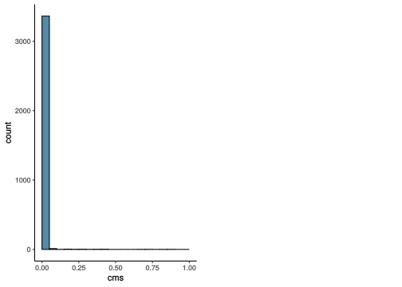

Summary_batch_characterization
Almut Lütge
18 October, 2019
Characterize batch effects
suppressPackageStartupMessages({
library(CellBench)
library(scater)
library(CellMixS)
library(variancePartition)
library(purrr)
library(jcolors)
library(here)
library(tidyr)
library(dplyr)
library(stringr)
library(ComplexHeatmap)
library(ggtern)
library(scran)
library(cowplot)
library(CAMERA)
library(ggrepel)
library(readr)
})Dataset and parameter
sce <- readRDS(params$data)
param <- readRDS(params$param)
celltype <- param[["celltype"]]
batch <- param[["batch"]]
sample <- param[["sample"]]
dataset_name <- param[["dataset_name"]]
dataset_name## [1] "csf_media"n_genes <- nrow(sce)
table(colData(sce)[,celltype])##
## 0 1 2 3 4 5 6 7
## 1908 1004 163 99 72 59 55 35table(colData(sce)[,batch])##
## cryo fresh
## 2550 845res_de <- readRDS(params$de)
abund <- readRDS(params$abund)
outputfile <- params$out_file
cols <-c(c(jcolors('pal6'),jcolors('pal8'))[c(1,8,14,5,2:4,6,7,9:13,15:20)],jcolors('pal4'))
names(cols) <- c()Visualize data
How are sample, celltypes and batches distributed within normalized, but not batch corrected data?
feature_list <- c(batch, celltype, sample)
feature_list <- feature_list[which(!is.na(feature_list))]
lapply(feature_list, function(feature_name){
visGroup(sce, feature_name, dim_red= "UMAP")
})## [[1]]
##
## [[2]]
##
## [[3]]
Batch strength/size
To compare or describe the severity of a batch effect there are different meassures. In general they can either give an estimate of the relative strength compared to the signal of interest e.g. the celltype signal or an absolut estimate e.g. the number of batch affected genes.
Variance partitioning
How much of the variance within the datasets can we attributed to the batch effect and how much could be explained by the celltype? Which genes are mostly affected?
vp_vars <- c("vp_batch", "vp_celltype", "vp_residuals")
vp <- as_tibble(rowData(sce)[, vp_vars]) %>% dplyr::mutate(gene= rownames(sce)) %>% dplyr::arrange(-vp_batch)
vp_sub <- vp[1:3] %>% set_rownames(vp$gene)## Warning: Setting row names on a tibble is deprecated.#plot
plotPercentBars( vp_sub[1:10,] )
plotVarPart( vp_sub )
Variance and gene expression
Are general expression and batch effect related? Does the batch effect or the celltype effect preferable manifest within highly, medium or low expressed genes?
#define expression classes by mean expression quantiles
th <- quantile(rowMeans(assays(sce)$logcounts), c(.33, .66))
high_th <- th[2]
mid_th <- th[1]
rowData(sce)$expr_class <- ifelse(rowMeans(assays(sce)$logcounts) > high_th, "high",
ifelse(rowMeans(assays(sce)$logcounts) <= high_th &
rowMeans(assays(sce)$logcounts) > mid_th,
"medium", "low"))
rowData(sce)$mean_expr <- rowMeans(assays(sce)$logcounts)
#plot
plot_dev <- function(var, var_col){
ggplot(as.data.frame(rowData(sce)), aes_string(x = "mean_expr", y = var, colour = var_col)) +
geom_point() +
geom_smooth(method = "lm", se = FALSE)
}
#Ternary plots
ggtern(data=as.data.frame(rowData(sce)),aes(vp_batch, vp_celltype, vp_residuals)) +
stat_density_tern(aes(fill=..level.., alpha=..level..),geom='polygon') +
scale_fill_gradient2(high = "red") +
guides(color = "none", fill = "none", alpha = "none") +
geom_point(size= 0.1, alpha = 0.5) +
Tlab("batch") +
Llab("celltype") +
Rlab("other") +
theme_bw()## Warning: Removed 1009 rows containing non-finite values (StatDensityTern).
t1 <- ggtern(data=as.data.frame(rowData(sce)),aes(vp_batch, vp_celltype, vp_residuals)) +
geom_point(size = 0.1) +
geom_density_tern() +
Tlab("batch") +
Llab("celltype") +
Rlab("other") +
theme_bw()
## Summarize variance partitioning
# How many genes have a variance component affected by batch with > 1%
n_batch_gene <- vp_sub %>% dplyr::filter("vp_batch" > 0.01) %>% nrow()/n_genes
n_batch_gene10 <- vp_sub %>% dplyr::filter("vp_batch" > 0.1) %>% nrow()/n_genes
n_celltype_gene <- vp_sub %>% dplyr::filter("vp_celltype"> 0.01) %>% nrow()/n_genes
n_rel <- n_batch_gene/n_celltype_gene
# Mean variance that is explained by the batch effect/celltype
m_batch <- mean(asin(vp_sub[, "vp_batch"]))## Warning in mean.default(asin(vp_sub[, "vp_batch"])): argument is not
## numeric or logical: returning NAm_celltype <- mean(asin(vp_sub[, "vp_celltype"]))## Warning in mean.default(asin(vp_sub[, "vp_celltype"])): argument is not
## numeric or logical: returning NAm_rel <- m_batch/m_celltypeScatterplot batch
plot_dev("vp_batch", "vp_batch")
Scatterplot celltype
plot_dev("vp_celltype", "vp_celltype")
Ternary plot all genes
t1
Ternary plot gene expression classes
t1 + facet_grid(~expr_class)
Cellspecific Mixing score
Overall
#visualize overall cms score
visHist(sce, n_col = 2, prefix = FALSE)
visMetric(sce, metric = "cms_smooth", dim_red = "UMAP")
visGroup(sce, celltype, dim_red = "UMAP")#summarize
mean_cms <- mean(sce$cms)
n_cms_0.01 <- length(which(sce$cms < 0.01))
cluster_mean_cms <- as_tibble(colData(sce)) %>% group_by_at(celltype) %>% summarize(cms_mean = mean(cms))
var_cms <- var(cluster_mean_cms$cms_mean)Celltypes cms smooth
#compare by celltypes
visCluster(sce, metric_var = "cms_smooth", cluster_var = celltype)## Picking joint bandwidth of 0.0034
visCluster(sce, metric_var = "cms_smooth", cluster_var = celltype, violin = TRUE)
Celltypes histogram
#compare histogram by celltype
p <- ggplot(as.data.frame(colData(sce)),
aes_string(x = "cms", fill = celltype)) +
geom_histogram() +
facet_wrap(celltype, scales = "free_y", ncol = 3) +
scale_fill_manual(values = cols) +
theme_classic()
p + geom_vline(aes_string(xintercept = "cms_mean",
colour = celltype),
cluster_mean_cms, linetype=2) +
scale_color_manual(values = cols) ## `stat_bin()` using `bins = 30`. Pick better value with `binwidth`.
Celltype specificity
Celltype abundance
meta_tib <- as_tibble(colData(sce)) %>% group_by_at(c(batch, celltype)) %>% summarize(n = n()) %>% dplyr::mutate(cell_freq = n / sum(n))
plot_abundance <- function(cluster_var, tib, x_var){
meta_df <- as.data.frame(eval(tib))
p <- ggplot(data=meta_df, aes_string(x=x_var, y="cell_freq", fill = cluster_var)) +
geom_bar(stat="identity") + scale_fill_manual(values=cols, name = "celltype")
p + coord_flip() + theme_minimal()
}
plot_abundance(cluster_var = celltype, tib = meta_tib, x_var = batch)
#summarize diff abundance
mean_rel_abund_diff <- mean(unlist(abund))
min_rel_abund_diff <- min(unlist(abund))
max_rel_abund_diff <- max(unlist(abund))Batch and celltype specific count distributions
Do the overall count distribution vary between batches? Are count distributions celltype depended
#batch level
bids <- levels(as.factor(colData(sce)[, batch]))
names(bids) <- bids
cids <- levels(as.factor(colData(sce)[, celltype]))
names(cids) <- cids
#mean gene expression by batch and cluster
mean_list <- lapply(bids, function(batch_var){
mean_cluster <- lapply(cids, function(cluster_var){
counts_sc <- as.matrix(logcounts(
sce[, colData(sce)[, batch] %in% batch_var &
colData(sce)[, celltype] %in% cluster_var]))
})
mean_c <- mean_cluster %>% map(rowMeans) %>% bind_rows %>%
dplyr::mutate(gene=rownames(sce)) %>%
gather(cluster, logcounts, cids)
})
mean_expr <- mean_list %>% bind_rows(.id= "batch")
ggplot(mean_expr, aes(x=logcounts, colour=batch)) + geom_density(alpha=.3) +
theme_classic() +
facet_wrap( ~ cluster, ncol = 3) +
scale_colour_manual(values = cols[c(1:3,7)]) +
scale_x_continuous(limits = c(0, 7))## Warning: Removed 10 rows containing non-finite values (stat_density).
Batch to batch comparisons of expression distributions
#mean expression
mean_expr <- mean_list %>% bind_rows(.id = "batch" ) %>% spread(batch, logcounts)
batch_all <- levels(as.factor(colData(sce)[,batch]))
lapply(batch_all, function(batch_var){
batch_var_2 <- batch_all[-which(batch_all %in% batch_var)]
lapply(batch_var_2, function(batch_var_3){
ggplot(mean_expr, aes_string(x=batch_var, y = batch_var_3)) +
geom_point(alpha = .3, aes(color=cluster)) +
ggtitle(batch_var) +
geom_abline(slope = 1) +
coord_fixed() +
facet_wrap( ~ cluster, ncol = 3) +
scale_color_manual(values=cols) +
theme_classic()
})
})## [[1]]
## [[1]][[1]]
##
##
## [[2]]
## [[2]][[1]]
Differentially expressed genes
Upset plot
## Upset plot\
cont <- param[["cont"]]
cs <- names(cont)
names(cs) <- cs
# Filter DEG by pvalue
FilterDEGs <- function (degDF = df, filter = c(FDR = 5)){
rownames(degDF) <- degDF$gene
pval <- degDF[, grep("adj.P.Val$", colnames(degDF)), drop = FALSE]
pf <- pval <= filter["FDR"]/100
pf[is.na(pf)] <- FALSE
DEGlistUPorDOWN <- sapply(colnames(pf), function(x) rownames(pf[pf[, x, drop = FALSE], , drop = FALSE]), simplify = FALSE)
}
result <- list()
m2 <- list()
for(jj in 1:length(cs)){
result[[jj]] <- sapply(res_de[[1]][[names(cs)[jj]]], function(x) FilterDEGs(x))
names(result[[jj]]) <- cids
m2[[jj]] = make_comb_mat(result[[jj]], mode = "intersect")
}
names(result) <- names(cs)
names(m2) <- names(cs)
lapply(m2, function(x) UpSet(x))## $`cryo-fresh`
Logfold_change and GSEA
# DE genes (per cluster and mean)
res <- res_de[["table"]]
n_de <- lapply(res, function(y) vapply(y, function(x) sum(x$adj.P.Val < 0.05), numeric(1)))
n_genes_lfc1 <- lapply(res, function(y) vapply(y, function(x) sum(abs(x$logFC) > 1), numeric(1)))
mean_n_genes_lfc1 <- mean(unlist(n_genes_lfc1))/n_genes
# plot DE for all comparison and check gene sets
#get geneset
gs <- read_delim(params$gs, delim = "\n", col_names = "cat")## Parsed with column specification:
## cols(
## cat = col_character()
## )cats <- sapply(gs$cat, function(u) strsplit(u, "\t")[[1]][-2],
USE.NAMES = FALSE)
names(cats) <- sapply(cats, .subset, 1)
cats <- lapply(cats, function(u) u[-1])
plotDE <- function(cont_var){
res_s <- res[[cont_var]] %>% map(filter, adj.P.Val < .05) %>% map(filter, logFC > 1)
#plot
lapply(names(res[[cont_var]]), function(ct){
ct_de <- res[[cont_var]][[ct]]
ct_de$gene <- gsub('[A-z0-9]*\\.', '', ct_de$gene)
res_s[[ct]]$gene <- gsub('[A-z0-9]*\\.', '', res_s[[ct]]$gene)
p <- ggplot(ct_de, aes(x = AveExpr, y = logFC, colour = logFC > 1, label = gene)) +
geom_point(size = 2, alpha = .5) +
geom_label_repel(data = res_s[[ct]]) +
ggtitle(paste0(ct,": ", cont_var)) +
theme_classic()
print(p)
cat("Cluster:", ct, "Contrast:", cont_var,
"Num genes:", nrow(ct_de), "Num DE:", nrow(res_s[[ct]]), "\n" )
# run 'camera' for this comparison
inds <- ids2indices(cats, ct_de$gene)
cm <- cameraPR(ct_de$t, inds)
print(cm %>% rownames_to_column("category") %>%
filter(FDR < .05 & NGenes >= 5) %>% head(8))
})
}
pathways <- lapply(names(res), plotDE)
## Cluster: 0 Contrast: cryo-fresh Num genes: 3676 Num DE: 3
## category NGenes Direction PValue
## 1 GO_STRUCTURAL_CONSTITUENT_OF_RIBOSOME 151 Down 1.477692e-17
## 2 GO_ANTIGEN_BINDING 28 Up 5.436662e-07
## 3 GO_STRUCTURAL_MOLECULE_ACTIVITY 231 Down 6.764911e-07
## 4 GO_MHC_PROTEIN_COMPLEX_BINDING 9 Up 1.636152e-06
## 5 GO_MHC_CLASS_II_PROTEIN_COMPLEX_BINDING 9 Up 1.636152e-06
## 6 GO_UNFOLDED_PROTEIN_BINDING 50 Up 3.562986e-06
## 7 GO_STRUCTURAL_CONSTITUENT_OF_CYTOSKELETON 25 Up 4.753247e-06
## 8 GO_ACTIN_MONOMER_BINDING 5 Down 3.582882e-05
## FDR
## 1 1.214663e-14
## 2 1.390189e-04
## 3 1.390189e-04
## 4 2.241528e-04
## 5 2.241528e-04
## 6 4.183963e-04
## 7 4.883961e-04
## 8 2.945129e-03
## Cluster: 1 Contrast: cryo-fresh Num genes: 3762 Num DE: 6
## category NGenes Direction PValue
## 1 GO_STRUCTURAL_CONSTITUENT_OF_RIBOSOME 151 Down 4.823964e-11
## 2 GO_TELOMERIC_DNA_BINDING 14 Up 2.442801e-06
## 3 GO_STRUCTURAL_CONSTITUENT_OF_CYTOSKELETON 25 Up 2.728710e-06
## 4 GO_TRANSLATION_ELONGATION_FACTOR_ACTIVITY 8 Up 1.317115e-05
## 5 GO_UNFOLDED_PROTEIN_BINDING 50 Up 3.624881e-05
## 6 GO_ANTIGEN_BINDING 37 Up 1.760390e-04
## 7 GO_PEPTIDE_ANTIGEN_BINDING 15 Up 2.721794e-04
## 8 GO_SINGLE_STRANDED_DNA_BINDING 32 Up 4.872863e-04
## FDR
## 1 1.985061e-08
## 2 4.491457e-04
## 3 4.491457e-04
## 4 1.806643e-03
## 5 3.585102e-03
## 6 1.448801e-02
## 7 2.036397e-02
## 8 3.097868e-02
## Cluster: 2 Contrast: cryo-fresh Num genes: 3913 Num DE: 5
## category NGenes
## 1 GO_STRUCTURAL_CONSTITUENT_OF_RIBOSOME 151
## 2 GO_OXIDOREDUCTASE_ACTIVITY_ACTING_ON_A_HEME_GROUP_OF_DONORS 15
## 3 GO_14_3_3_PROTEIN_BINDING 8
## 4 GO_STRUCTURAL_MOLECULE_ACTIVITY 234
## 5 GO_UNFOLDED_PROTEIN_BINDING 50
## 6 GO_RRNA_BINDING 38
## 7 GO_ANTIGEN_BINDING 35
## Direction PValue FDR
## 1 Down 1.541299e-13 1.282360e-10
## 2 Down 3.979195e-06 1.158620e-03
## 3 Up 4.177715e-06 1.158620e-03
## 4 Down 8.800707e-06 1.571849e-03
## 5 Up 9.446207e-06 1.571849e-03
## 6 Down 2.845738e-04 3.946090e-02
## 7 Up 3.345913e-04 3.976857e-02
## Cluster: 3 Contrast: cryo-fresh Num genes: 3767 Num DE: 9
## category NGenes Direction PValue FDR
## 1 GO_TELOMERIC_DNA_BINDING 14 Up 1.047537e-05 0.008631702
## Cluster: 4 Contrast: cryo-fresh Num genes: 3966 Num DE: 19
## category NGenes Direction PValue
## 1 GO_STRUCTURAL_CONSTITUENT_OF_RIBOSOME 150 Down 9.010346e-18
## 2 GO_STRUCTURAL_MOLECULE_ACTIVITY 235 Down 7.754843e-08
## 3 GO_RRNA_BINDING 38 Down 2.840043e-07
## 4 GO_ACTIN_MONOMER_BINDING 5 Down 1.795692e-04
## FDR
## 1 7.487598e-15
## 2 3.222137e-05
## 3 7.866920e-05
## 4 2.131743e-02
## Cluster: 5 Contrast: cryo-fresh Num genes: 3564 Num DE: 18
## category NGenes Direction PValue FDR
## 1 GO_PEPTIDE_ANTIGEN_BINDING 13 Up 7.312552e-06 0.002957927
## Cluster: 6 Contrast: cryo-fresh Num genes: 3919 Num DE: 12
## category NGenes
## 1 GO_STRUCTURAL_CONSTITUENT_OF_RIBOSOME 151
## 2 GO_MHC_CLASS_II_RECEPTOR_ACTIVITY 6
## 3 GO_SIGNALING_PATTERN_RECOGNITION_RECEPTOR_ACTIVITY 5
## 4 GO_MHC_PROTEIN_COMPLEX_BINDING 12
## 5 GO_MHC_CLASS_II_PROTEIN_COMPLEX_BINDING 12
## 6 GO_ANTIGEN_BINDING 37
## 7 GO_OXIDOREDUCTASE_ACTIVITY_ACTING_ON_A_HEME_GROUP_OF_DONORS 15
## 8 GO_STRUCTURAL_MOLECULE_ACTIVITY 234
## Direction PValue FDR
## 1 Down 2.288433e-09 1.906265e-06
## 2 Up 5.204812e-09 2.167804e-06
## 3 Down 3.076514e-08 8.542455e-06
## 4 Up 4.201771e-06 5.833459e-04
## 5 Up 4.201771e-06 5.833459e-04
## 6 Up 1.139936e-05 1.356524e-03
## 7 Down 1.024770e-04 1.067042e-02
## 8 Down 2.018806e-04 1.868517e-02
## Cluster: 7 Contrast: cryo-fresh Num genes: 3839 Num DE: 8
## category NGenes Direction PValue
## 1 GO_PHOSPHOLIPASE_INHIBITOR_ACTIVITY 5 Up 8.597698e-05
## 2 GO_LIPASE_INHIBITOR_ACTIVITY 5 Up 8.597698e-05
## FDR
## 1 0.01784022
## 2 0.01784022Summarize differential expression analysis
# DE genes (per cluster and mean)
n_de <- lapply(res, function(y) vapply(y, function(x) sum(x$adj.P.Val < 0.05), numeric(1)))
n_de_cl <- lapply(res, function(y) vapply(y, function(x) nrow(x), numeric(1)))
mean_n_de <- lapply(n_de, function(x) mean(x))
mean_mean_n_de <- mean(unlist(mean_n_de))/n_genes
min_mean_n_de <- min(unlist(mean_n_de))/n_genes
max_mean_n_de <- max(unlist(mean_n_de))/n_genes
# Genes with lfc > 1
n_genes_lfc1 <- lapply(res, function(y) vapply(y, function(x) sum(abs(x$logFC) > 1), numeric(1)))
mean_n_genes_lfc1 <- mean(unlist(n_genes_lfc1))/n_genes
min_n_genes_lfc1 <- min(unlist(n_genes_lfc1))/n_genes
max_n_genes_lfc1 <- max(unlist(n_genes_lfc1))/n_genes
# DE genes overlap between celltypes (celltype specific de genes)
# Genes are "overlapping" if they are present in all clusters with at least 10% of all cells
de_overlap <- lapply(result, function(x){
result2 <- x[table(colData(sce)[, celltype]) > ncol(sce) * 0.1]
de_overlap <- length(Reduce(intersect, result2))
de_overlap
})
mean_de_overlap <- mean(unlist(de_overlap))/n_genes
min_de_overlap <- min(unlist(de_overlap))/n_genes
max_de_overlap <- max(unlist(de_overlap))/n_genes
#Genes unique to single celltypes
unique_genes_matrix <- NULL
unique_genes <- NULL
cb <- length(names(result[[1]]))
unique_genes <- lapply(result,function(x){
for( i in 1:cb ){
unique_genes[i] <-as.numeric(length(setdiff(unlist(x[i]),unlist(x[-i]))))
}
unique_genes_matrix <- cbind(unique_genes_matrix, unique_genes)
unique_genes_matrix
})
unique_genes <- Reduce('cbind', unique_genes)
colnames(unique_genes) <- names(result)
rownames(unique_genes) <- names(result[[1]])
# Relative cluster specificity (unique/overlapping)
rel_spec1 <- NULL
for( i in 1:dim(unique_genes)[2] ){
rel_spec <- unique_genes[,i]/de_overlap[[i]]
rel_spec1 <- cbind(rel_spec1,rel_spec)
}
mean_rel_spec <- mean(rel_spec1)
min_rel_spec <- min(rel_spec1)
max_rel_spec <- max(rel_spec1)Celltype specific DE distributions
How similar is the batch effect between celltypes. Do we have similar logFC distributions or different?
combine_folds <- function(cont_var){
#extract the contrast of interest and change log2fold colums names to be unique
B <- res[[cont_var]]
new_name <- function(p){
colnames(B[[p]])[3] <- paste0("logFC_", p)
return(B[[p]][,c(1,3)])
}
B_new_names <- lapply(names(B),new_name)
names(B_new_names) <- names(B)
#combine log2fold colums
Folds <- Reduce(function(...){inner_join(..., by="gene")}, B_new_names)
}
all_folds <- lapply(cs, combine_folds)
#define pannels for pairs() function
panel.cor <- function(x, y, digits = 2, cex.cor){
usr <- par("usr"); on.exit(par(usr))
par(usr = c(0, 1, 0, 1))
r <- abs(cor(x, y))
txt <- format(c(r, 0.123456789), digits=digits)[1]
test <- cor.test(x,y)
Signif <- ifelse(round(test$p.value, 3) < 0.001,
"p<0.001",
paste("p=",round(test$p.value,3)))
text(0.5, 0.25, paste("r=",txt), cex = 3)
text(.5, .75, Signif, cex = 3)
}
panel.smooth <- function (x, y, col = "blue", bg = NA, pch = 18, cex = 1.5,
col.smooth = "red", span = 2/3, iter = 3, ...){
points(x, y, pch = pch, col = col, bg = bg, cex = cex)
ok <- is.finite(x) & is.finite(y)
if( any(ok) )
lines(stats::lowess(x[ok], y[ok], f = span, iter = iter),
col = col.smooth, ...)
}
panel.hist <- function(x, ...){
usr <- par("usr"); on.exit(par(usr))
par(usr = c(usr[1:2], 0, 1.5) )
h <- hist(x, plot = FALSE)
breaks <- h$breaks
nB <- length(breaks)
y <- h$counts
y <- y/max(y)
rect(breaks[-nB], 0, breaks[-1], y, col="cyan", ...)
}
#plot correlations
lapply(names(all_folds), function(x) pairs(all_folds[[x]][,-1],
lower.panel = panel.smooth,
upper.panel = panel.cor,
diag.panel = panel.hist, main = x))
## [[1]]
## NULLBatch categorization
How does the batch effect manifest? Can we describe it by “simple” mean shifts of expression levels for some genes for all the cells in a given celltype and batch? Can we “remove” the batch effcet using a linear model with batch, batch and celltype or batch and celltype interacting?
#Visualize different models
vis_type <- function(dim_red){
g <- visGroup(sce, batch, dim_red = dim_red) +
ggtitle("unadjusted")
g1 <- visGroup(sce, batch, dim_red = paste0(dim_red, "_Xadj1")) +
ggtitle("constant batch effect")
g2 <- visGroup(sce, batch, dim_red = paste0(dim_red, "_Xadj1")) +
ggtitle("constant batch effect, different ct composition")
g3 <- visGroup(sce, batch, dim_red = paste0(dim_red, "_Xadj1")) +
ggtitle("celltype and batch effect interact")
do.call("grid.arrange", c(list(g, g1, g2, g3), ncol = 2))
}PCA
vis_type("PCA")
UMAP
vis_type("UMAP")
Cellspecific Mixing Score
# #Cellspecific Mixing score (Batch effect strength after "removal")
visHist(sce, metric = c("cms", "cms.Xadj1", "cms.Xadj2", "cms.Xadj3"), prefix = FALSE)
visIntegration(sce, metric = "cms", metric_name = "cms")## Picking joint bandwidth of 0.00789
Simulation parameter
Extract parameter to use as input into simualation
#percentage of batch affected genes
cond <- gsub("-.*", "", names(n_de))
cond <- c(cond, unique(gsub(".*-", "", names(n_de))))
cond <- unique(cond)
de_be_tab <- n_de %>% bind_cols()
de_cl_tab <- n_de_cl %>% bind_cols()
de_be <- cond %>% map(function(x){
de_tab <- de_be_tab[, grep(x, colnames(de_be_tab))]
de_be <- rowMeans(de_tab)
}) %>% bind_cols() %>% set_colnames(cond)
n_cl <- cond %>% map(function(x){
cl_tab <- de_cl_tab[, grep(x, colnames(de_cl_tab))]
de_cl <- rowMeans(cl_tab)
}) %>% bind_cols() %>% set_colnames(cond)
p_be <- de_be/n_cl
mean_p_be <- mean(colMeans(p_be))
min_p_be <- min(colMins(as.matrix(p_be)))
max_p_be <- max(colMaxs(as.matrix(p_be)))
sd_p_be <- mean(colSds(as.matrix(p_be)))
if(is.na(sd_p_be)){ sd_p_be <- 0 }
#### Percentage of celltype specific genes "p_ct"
n_de_unique <- lapply(result,function(x){
de_genes <- unlist(x) %>% unique() %>% length()
de_genes <- de_genes/length(x)
}) %>% bind_cols()
rel_spec2 <- NULL
for(i in 1:length(de_overlap)){
rel_spec <- de_overlap[[i]]/mean(n_de[[i]][table(colData(sce)[, celltype]) > dim(expr)[2] * 0.1])
rel_spec2 <- cbind(rel_spec2, rel_spec)
}
mean_p_ct <- 1 - mean(rel_spec2)
max_p_ct <- 1 - min(rel_spec2)
min_p_ct <- 1 - max(rel_spec2)
sd_p_ct <- sd(rel_spec2)
if(is.na(sd_p_ct)){ sd_p_ct <- 0 }
# Logfold change
#logFoldchange batch effect distribution
mean_lfc_cl <- lapply(res, function(y) vapply(y, function(x){
de_genes <- which(x$adj.P.Val < 0.05)
mean_de <- mean(abs(x[, "logFC"]))}
, numeric(1))) %>% bind_cols()
mean_lfc_be <- mean(colMeans(mean_lfc_cl, na.rm = TRUE))
min_lfc_be <- min(colMins(as.matrix(mean_lfc_cl), na.rm = TRUE))
max_lfc_be <- max(colMaxs(as.matrix(mean_lfc_cl), na.rm = TRUE))Summarize batch effect
- Batch size
- Celltype specificity
- “Batch genes”
- batch type
#Size? How much of the variance can be attributed to the batch effect?
size <- data.frame("batch_genes_1per" = n_batch_gene, # 1.variance partition
"batch_genes_10per" = n_batch_gene10,
"celltype_gene_1per" = n_celltype_gene,
"relative_batch_celltype" = n_rel,
"mean_var_batch" = m_batch,
"mean_var_celltype" = m_celltype,
"rel_mean_ct_batch" = m_rel,
"mean_cms" = mean_cms, #2.cms
"n_cells_cms_0.01" = n_cms_0.01,
"mean_mean_n_de_genes" = mean_mean_n_de, #3.de genes
"max_mean_n_de_genes" = max_mean_n_de,
"min_mean_n_de_genes" = min_mean_n_de,
"mean_n_genes_lfc1" = mean_n_genes_lfc1,
"min_n_genes_lfc1" = min_n_genes_lfc1,
"max_n_genes_lfc1" = max_n_genes_lfc1,
"n_cells_total" = ncol(sce), #4.general
"n_genes_total" = nrow(sce))
#Celltype-specificity? How celltype/cluster specific are batch effects?
# Differences in size, distribution or abundance? Do we find correlations between lfcs,
# overlap in de genes, pathways? Interaction between ct and be?
celltype <- data.frame('mean_rel_abund_diff' = mean_rel_abund_diff, #1.abundance
'min_rel_abund_diff' = min_rel_abund_diff,
'max_rel_abund_diff' = max_rel_abund_diff,
"celltype_var_cms" = var_cms, #2.size/strength
"mean_de_overlap" = mean_de_overlap,
"min_de_overlap" = min_de_overlap,
"max_de_overlap" = max_de_overlap,
"mean_rel_cluster_spec"= mean_rel_spec,
"min_rel_cluster_spec"= min_rel_spec,
"max_rel_cluster_spec"= max_rel_spec)
sim <- data.frame("mean_p_be" = mean_p_be,
"max_p_be" = max_p_be,
"min_p_be" = min_p_be,
"sd_p_be" = sd_p_be,
"mean_lfc_be" = mean_lfc_be,
"min_lfc_be" = min_lfc_be,
"max_lfc_be" = max_lfc_be,
"mean_p_ct"= mean_p_ct,
"min_p_ct"= min_p_ct,
"max_p_ct"= max_p_ct,
"sd_p_ct" = sd_p_ct)
summary <- cbind(size, celltype, sim) %>% set_rownames(dataset_name)
### -------------- save summary object ----------------------###
saveRDS(summary, file = outputfile)sessionInfo()## R version 3.6.1 (2019-07-05)
## Platform: x86_64-pc-linux-gnu (64-bit)
## Running under: Ubuntu 16.04.6 LTS
##
## Matrix products: default
## BLAS: /home/aluetg/R/lib/R/lib/libRblas.so
## LAPACK: /home/aluetg/R/lib/R/lib/libRlapack.so
##
## locale:
## [1] LC_CTYPE=C.UTF-8 LC_NUMERIC=C
## [3] LC_TIME=C LC_COLLATE=en_CA.UTF-8
## [5] LC_MONETARY=C LC_MESSAGES=en_CA.UTF-8
## [7] LC_PAPER=C LC_NAME=C
## [9] LC_ADDRESS=C LC_TELEPHONE=C
## [11] LC_MEASUREMENT=C LC_IDENTIFICATION=C
##
## attached base packages:
## [1] grid parallel stats4 stats graphics grDevices utils
## [8] datasets methods base
##
## other attached packages:
## [1] readr_1.3.1 ggrepel_0.8.1
## [3] CAMERA_1.41.1 xcms_3.7.3
## [5] MSnbase_2.11.9 ProtGenerics_1.17.4
## [7] mzR_2.19.6 Rcpp_1.0.2
## [9] cowplot_1.0.0 scran_1.13.26
## [11] ggtern_3.1.0 ComplexHeatmap_2.1.0
## [13] stringr_1.4.0 dplyr_0.8.3
## [15] tidyr_1.0.0 here_0.1
## [17] jcolors_0.0.4 purrr_0.3.2
## [19] variancePartition_1.15.8 scales_1.0.0
## [21] foreach_1.4.7 limma_3.41.17
## [23] CellMixS_1.1.3 kSamples_1.2-9
## [25] SuppDists_1.1-9.4 scater_1.13.24
## [27] ggplot2_3.2.1 CellBench_1.1.3
## [29] tibble_2.1.3 magrittr_1.5
## [31] SingleCellExperiment_1.7.11 SummarizedExperiment_1.15.9
## [33] DelayedArray_0.11.8 BiocParallel_1.19.3
## [35] matrixStats_0.55.0 Biobase_2.45.1
## [37] GenomicRanges_1.37.16 GenomeInfoDb_1.21.2
## [39] IRanges_2.19.16 S4Vectors_0.23.25
## [41] BiocGenerics_0.31.6
##
## loaded via a namespace (and not attached):
## [1] rappdirs_0.3.1 R.methodsS3_1.7.1
## [3] acepack_1.4.1 bit64_0.9-7
## [5] knitr_1.25 irlba_2.3.3
## [7] R.utils_2.9.0 rpart_4.1-15
## [9] data.table_1.12.4 RCurl_1.95-4.12
## [11] doParallel_1.0.15 metap_1.1
## [13] preprocessCore_1.47.1 RSQLite_2.1.2
## [15] RANN_2.6.1 future_1.14.0
## [17] bit_1.1-14 bayesm_3.1-3
## [19] lubridate_1.7.4 assertthat_0.2.1
## [21] viridis_0.5.1 xfun_0.10
## [23] hms_0.5.1 evaluate_0.14
## [25] DEoptimR_1.0-8 progress_1.2.2
## [27] caTools_1.17.1.2 dbplyr_1.4.2
## [29] igraph_1.2.4.1 DBI_1.0.0
## [31] htmlwidgets_1.5.1 tensorA_0.36.1
## [33] ellipsis_0.3.0 backports_1.1.5
## [35] energy_1.7-6 gbRd_0.4-11
## [37] compositions_1.40-2 RcppParallel_4.4.4
## [39] vctrs_0.2.0 ROCR_1.0-7
## [41] withr_2.1.2 packrat_0.5.0
## [43] robustbase_0.93-5 checkmate_1.9.4
## [45] sctransform_0.2.0 prettyunits_1.0.2
## [47] cluster_2.1.0 ape_5.3
## [49] lazyeval_0.2.2 crayon_1.3.4
## [51] labeling_0.3 edgeR_3.27.13
## [53] pkgconfig_2.0.3 nlme_3.1-141
## [55] vipor_0.4.5 nnet_7.3-12
## [57] rlang_0.4.0 globals_0.12.4
## [59] lifecycle_0.1.0 affyio_1.55.0
## [61] listarrays_0.2.0 BiocFileCache_1.9.1
## [63] MassSpecWavelet_1.51.0 rsvd_1.0.2
## [65] rprojroot_1.3-2 lmtest_0.9-37
## [67] graph_1.63.0 Matrix_1.2-17
## [69] boot_1.3-23 zoo_1.8-6
## [71] base64enc_0.1-3 beeswarm_0.2.3
## [73] ggridges_0.5.1 GlobalOptions_0.1.1
## [75] png_0.1-7 viridisLite_0.3.0
## [77] rjson_0.2.20 bitops_1.0-6
## [79] R.oo_1.22.0 KernSmooth_2.23-15
## [81] blob_1.2.0 DelayedMatrixStats_1.7.2
## [83] shape_1.4.4 memoise_1.1.0
## [85] plyr_1.8.4 ica_1.0-2
## [87] gplots_3.0.1.1 bibtex_0.4.2
## [89] gdata_2.18.0 zlibbioc_1.31.0
## [91] compiler_3.6.1 lsei_1.2-0
## [93] dqrng_0.2.1 RColorBrewer_1.1-2
## [95] pcaMethods_1.77.0 clue_0.3-57
## [97] lme4_1.1-21 fitdistrplus_1.0-14
## [99] affy_1.63.1 XVector_0.25.0
## [101] listenv_0.7.0 pbapply_1.4-2
## [103] htmlTable_1.13.2 Formula_1.2-3
## [105] MASS_7.3-51.4 tidyselect_0.2.5
## [107] vsn_3.53.0 stringi_1.4.3
## [109] yaml_2.2.0 BiocSingular_1.1.7
## [111] locfit_1.5-9.1 latticeExtra_0.6-28
## [113] MALDIquant_1.19.3 tools_3.6.1
## [115] future.apply_1.3.0 rstudioapi_0.10
## [117] circlize_0.4.8 foreign_0.8-72
## [119] gridExtra_2.3 mzID_1.23.0
## [121] Rtsne_0.15 digest_0.6.21
## [123] BiocManager_1.30.7 proto_1.0.0
## [125] SDMTools_1.1-221.1 RcppAnnoy_0.0.13
## [127] ncdf4_1.16.1 httr_1.4.1
## [129] npsurv_0.4-0 Rdpack_0.11-0
## [131] colorspace_1.4-1 XML_3.98-1.20
## [133] reticulate_1.13 splines_3.6.1
## [135] uwot_0.1.4 RBGL_1.61.0
## [137] statmod_1.4.32 latex2exp_0.4.0
## [139] multtest_2.41.0 plotly_4.9.0
## [141] jsonlite_1.6 nloptr_1.2.1
## [143] zeallot_0.1.0 R6_2.4.0
## [145] Hmisc_4.2-0 pillar_1.4.2
## [147] htmltools_0.4.0 glue_1.3.1
## [149] minqa_1.2.4 BiocNeighbors_1.3.5
## [151] codetools_0.2-16 tsne_0.1-3
## [153] lattice_0.20-38 pbkrtest_0.4-7
## [155] curl_4.2 ggbeeswarm_0.6.0
## [157] leiden_0.3.1 colorRamps_2.3
## [159] gtools_3.8.1 survival_2.44-1.1
## [161] rmarkdown_1.16 munsell_0.5.0
## [163] GetoptLong_0.1.7 GenomeInfoDbData_1.2.1
## [165] iterators_1.0.12 impute_1.59.0
## [167] reshape2_1.4.3 gtable_0.3.0
## [169] Seurat_3.1.1